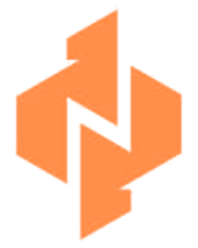

Business first
Every technical decision starts with the outcome it needs to create for the business and its users.

WykSofts Inc.Start a projectAbout WykSofts
We are a Nairobi-based software company helping organizations turn important ideas into thoughtful digital products that last.
What guides us
More than code: clear product thinking, thoughtful design, dependable engineering, and a team that sees the bigger picture.
Every technical decision starts with the outcome it needs to create for the business and its users.
Thoughtful design, clean engineering, and clear communication are built into the process.
We build foundations that can evolve as customers, operations, and ambition expand.
Meet the founder
Founder & CEO · WykSofts Inc.
With more than 10 years in technology, Wycliff combines product thinking, thoughtful design, and dependable engineering to move ideas from early concepts to useful, scalable solutions. His experience spans customer-facing mobile products, business websites, software integrations, and cloud-based systems. Through WykSofts, he focuses on clear communication, practical technology, and long-term client value.
WykSofts in motion
A short introduction to the thinking, craft, and ambition behind WykSofts Inc.
Download launch film ↓Ready when you are